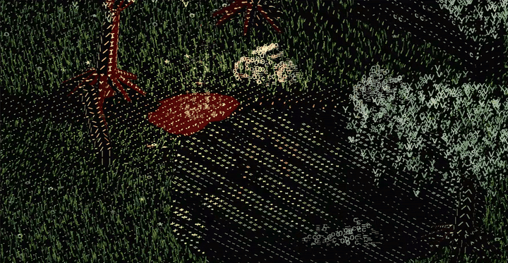
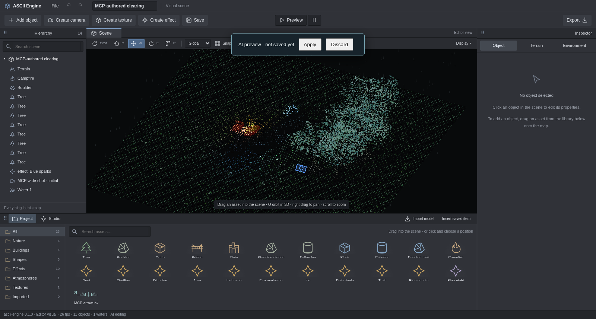

ASCII Engine
Build 3D worlds made of letters.
ASCII Engine is a visual engine and editor for creating ASCII 3D scenes. Sculpt terrain, paint water, arrange objects and bring your world to life with wind, particles, lighting and atmosphere. Letters follow the geometry and movement of the things they form.
Try in your browser
Use the map buttons in the live gallery to switch between five demos inside the page. No installation is needed.
explore the forest, animated characters and combat effects.
Open separately ↗Drag to rotate the demo camera, scroll to zoom and use the controls to adjust letters and light or pause the animation. The demo menu contains these five maps for viewing. To create scenes or work with AI/MCP, use the local editor setup described below.

See it in action
These animated previews show what you can create with the editor, from shaping a map to framing the finished scene. GIFs play directly in this README. Watch the full chapters with video players, or download them below. The local gallery also works from a checkout. Chapters 01–06 reuse existing footage with English captions; their captured historical interface is Portuguese. Texture Studio shows the current English editor.
01 · Terrain
Create a map, sculpt its elevation and smooth slopes with brushes. Terrain and grass coverage follow the shape you build.
02 · Water, paths and wind
Paint a lake, shape its shoreline and clear a path through the grass. Move the camera closer to see individual glyphs sway in the wind. Water and reflections are drawn in letters too.
03 · Objects and composition
Choose trees, rocks, ruins and logs from the asset library. Preview objects in the scene before placing them, then adjust their position, rotation and scale with the inspector or transform gizmos.
04 · Effects and lighting
Build a fire in the effect studio. Adjust its layers, sparks and light, save the effect to the asset library and place it in the scene to illuminate the surrounding objects and grass.
05 · Atmosphere
Explore dusk and moonlight on the same scene. Adjust exposure, color, light direction, shadows and fog, then save an atmosphere to reuse in other compositions.
06 · Cameras, preview and export
Observe animated water, place a camera with a live thumbnail and choose the initial framing. Save the editable map, export its scene document and preview the composition with animated grass, water and fire.
07 · Texture Studio
Select an object or named part and shape its appearance in an isolated preview. Choose letters and fonts, adjust size, spacing, colors and contrast, or show only the letters. Tune the preview lights, then apply and save the texture to reuse on another object.
Create with AI through MCP
An AI agent can run the complete supported visual authoring workflow through the local MCP server: create a scene, inspect its rendered result, adjust it and export an editable document. Once the editor and client are connected, the agent can perform these operations without manual interface clicks.
- Sculpt terrain, paint water, arrange objects and import GLTF/GLB models.
- Edit named model parts; create and reuse textures, effects and atmospheres.
- Adjust letters, fonts, colors, lighting, fog, weather and composition cameras.
- Read the live catalog, preview edits, inspect PNG captures and undo/redo.
- Save and reopen portable scenes with embedded models and reusable assets.
- Queue Web/Tauri project exports and read their build status through MCP.
Example prompt: “Create a moonlit clearing with a lake and trees. Give the tree crowns green arrow glyphs with no solid body, save that texture, show me a preview and export the editable scene.”

The server exposes 16 tools. scene_apply accepts atomic batches; scene.patch and scene.replace cover every supported SceneDoc field. Each accepted batch shares the editor's undo history. This covers the visual features currently implemented; gameplay rules and unsupported rendering features require additional development. MCP runs locally and needs an open editor session and an MCP-capable AI client.
Start the editor with pnpm dev, then configure your client using the MCP configuration example, replacing the example paths with your checkout. Follow the connection guide and tool reference for setup and commands.
What you can create
- Maps and items: brush-based terrain, paths, water, built-in assets and imported GLTF/GLB models.
- Per-part styles: give a tree's crown and trunk, or individual parts of a model, their own glyph technique, alphabet, size and color.
- Reusable effects: particle layers, fire, smoke, sparks and lights, with an isolated preview and recipes saved to the library.
- Reusable textures: letters, fonts, visibility, palettes and preview lights, applied to whole objects or named parts and saved to the library.
- Environments: lighting, shadows, fog, rain and snow.
- Compositions: saved orthographic cameras, aspect ratios, live thumbnails and preview through the initial camera.
- Editable scenes: undo/redo, a local draft, saving, reopening and JSON export.
The project grew out of Pomorog's visual style. Its demos include Dark Forest, Rain Marsh, Snow Pines, Old Mine and Sunken Cathedral, along with animated characters and scripted combat encounters.
Try it
Requires Node.js and pnpm. The workspace uses pnpm 11.9.0.
pnpm install
pnpm devOpen localhost:1440 to create a scene. Dark Forest shows the character, creature and combat effect demo.
In the editor, W moves, E rotates, R scales and O activates orbit. Drag assets from the library into the scene. Open Studio for effects, atmospheres and textures, and Preview to view the animated composition.
Export a web demo without the editor panels:
pnpm export -- --title "Dark Forest" --area dark_forestThe output is exports/dark-forest/web/ and can be served over HTTP. Saved scenes can also be exported with --scene path/to/scene.ascii.json.
Performance
The performance study includes capacity tables and nine reproducible charts for this i5-12450H / Chromium headless / ANGLE GL profile. Optimized JavaScript makes the reference skinning step 45× faster and frame p50 52% lower. Hidden water pauses in the editor and exported player; offline/parity views simulate everything. No WebAssembly is used; the remaining visible-water numeric step qualified, but its JS baseline and WASM prototype are deferred by project priority.
Project status
In development. The current release covers visual content creation, editing and export. The player runs scenes and existing demos. Gameplay components and scripts attached to objects through the editor are a future stage; demo combat follows a programmed sequence.
Development
The core in packages/engine uses TypeScript and Three.js, with glyph techniques declared per object and per part. The editor in apps/editor uses Vite and includes a Tauri desktop shell. Data authoring and the API/MCP automation bridge live in separate modules.
The renderer accepts appearance and effect libraries explicitly. Import specialized APIs through @ascii-engine/core/techniques, /world or /fx; optional Pomorog recipes use /pomorog. See the package boundary decision.
pnpm check # types, tests and build
pnpm compare # visual demo comparison; requires pnpm dev
pnpm verify:authoring # editor interaction checks; requires pnpm devDocumentation
- Visual editor guide: tools and creation workflow.
- Example scenes: documents to open in the editor.
- Authoring API and MCP: tools and agent integration.
- Architecture and plan: principles, systems and milestones.
- Development log: changes and validation.
- Visual origin: Pomorog: read-only reference.
- Agent instructions.